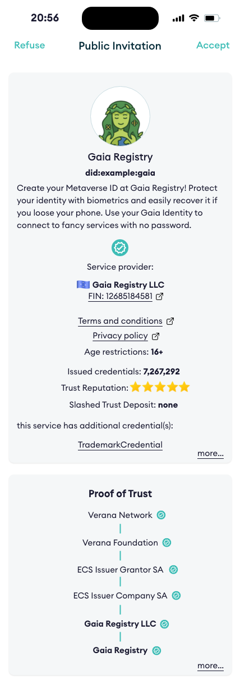
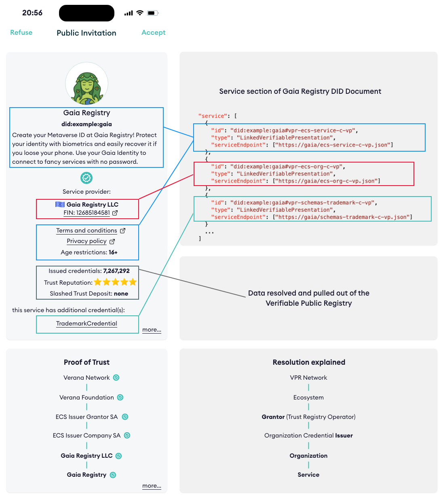

Verifiable Trust v4 Specification§
Status: stable. This version only receives minor fixes.
Latest draft: spec v5-draft0
Previous versions: spec v3
- Editors:
- Contributors:
- Participate:
Abstract§
Today’s internet has no built-in trust layer. Users cannot verify who operates a service before connecting to it, and service providers have no standardized way to confirm the identity of their users. The result is an environment where phishing, impersonation, spam, and credential theft thrive — not because of missing technology, but because of a missing trust architecture.
Current approaches make the problem worse. Passwords are fragile and reused. Federated login concentrates control in a handful of platforms. Each service imposes its own registration flow, fragmenting the user experience while centralizing personal data in siloed systems that are routinely breached. Privacy is an afterthought, and users have little visibility into who they are really interacting with.
The rapid expansion of AI agents makes this even more urgent. Autonomous agents now interact with services, make requests, and act on behalf of users or organizations — yet there is no trust layer for them to prove who they represent, what they are authorized to do, or whether their claims are legitimate. Without verifiable identity and authorization, AI agents become a new vector for fraud, impersonation, and unauthorized access at machine speed and scale.
Verifiable Trust is an open, decentralized trust layer designed to address these problems at their root. It introduces a model where every service, organization, and user agent can cryptographically prove its identity, authorization, and governance context — before any connection is established.
The core idea is straightforward: a Verifiable Service presents verifiable credentials that identify its operator, describe its purpose, and prove its authorization within a governed ecosystem. A Verifiable User Agent resolves and verifies these credentials, queries a Verifiable Public Registry to confirm that they were issued by recognized authorities, and displays a Proof-of-Trust to the user — all before the first interaction takes place.
A key consequence is that a Verifiable Service is not identified by an opaque URL, but by a resolvable DID. Its DID Document declares one or more service endpoints — at minimum a DIDComm channel used to establish trust and to bootstrap access to the rest of the service, and optionally additional endpoints such as MCP, A2A, or a plain website. A peer resolves the DID, performs trust resolution, and opens a DIDComm session over which it obtains any credentials or access tokens it needs; only then does it consume the other declared endpoints. This inverts the familiar “connect first, verify later” pattern of today’s internet into a “verify first, then connect” model that applies uniformly to humans, applications, and AI agents.
This enables mutual authentication without passwords, verifiable service discovery without centralized directories, privacy-preserving credential exchange with selective disclosure and unlinkability, and ecosystem governance that is transparent, auditable, and decentralized.
Verifiable Trust is container-agnostic, supporting both W3C Verifiable Credentials and Anonymous Credentials to balance transparency with privacy depending on the use case. It is also DID-method-agnostic, allowing ecosystems to operate across different decentralized identifier infrastructures.
This specification defines the Verifiable Trust architecture, its core concepts — Verifiable Services, Verifiable User Agents, Verifiable Trust Credentials, Essential Credential Schemas, and the trust resolution process — and the normative requirements for interoperable implementations.
About this Document§
In order to fully understand the concepts developed in this document, you should have some basic knowledge of the ToIP stack, DID, DIDComm, ecosystem, and more generally, all terms present in the Terminology section.
Conformance§
As well as sections marked as non-normative, all authoring guidelines, diagrams, examples, and notes in this specification are non-normative. Everything else in this specification is normative. The key words MAY, MUST, MUST NOT, OPTIONAL, RECOMMENDED, REQUIRED, SHOULD, and SHOULD NOT in this document are to be interpreted as described in BCP 14 RFC2119 RFC8174 when, and only when, they appear in all capitals, as shown here.
Terminology§
- credential schema:
- An VPR resource which represents a verifiable credential definition and the associated permissions and business rules for issuing, verifying or holding a credential linked to this credential schema.
- decentralized identifier:
- A decentralized identifier, as specified in [DID-CORE].
- decentralized identifier communication:
- DIDComm uses DIDs to establish confidential, ongoing connections.
- decentralized identifier document:
- A DID Document, as specified in [DID-CORE].
- verifiable public registry:
- a public, normally decentralized network, which provides: ecosystem features, that can be used by all its participants: create ecosystems, for each ecosystem, define its credential schemas, who can issue, verify credential of a specific credential schema,… For more information, please refer to VPR Spec.
- verifiable service:
- A service, identified by a resolvable DID, that can be deployed anywhere by its owner, that conforms to this spec, and that has a resolvable proof of trust. A VS declares its service endpoints in its DID Document (see [VS-SVC]); it MUST declare at least a DIDComm endpoint and MAY declare additional services such as MCP, A2A, a website, or any other service type.
- verifiable user agent:
- A user agent for accessing and using VSs. To be considered a VUA, a user agent must conform and enforce this spec, such as presenting a proof of trust to end user before accepting connecting to VS compliant services, and refuse connecting to not compliant services.
- essential credential schema:
- Default credential schema, owned by an ecosystem, that provide the basis for a trust layer to exist in the ecosystem so that VUA can generate a proof of trust.
- holder:
- A role an entity might perform by possessing one or more verifiable credentials and generating verifiable presentations from them. A holder is often, but not always, a subject of the verifiable credentials they are holding. Holders store their credentials in credential repositories. Example holders include organizations, persons, things.
- issuer:
- A role an entity can perform by asserting claims about one or more subjects, creating a verifiable credential from these claims, and transmitting the verifiable credential to a holder. Example issuers include corporations, non-profit organizations, trade associations, governments, and individuals.
- linked-vp:
- A presentation of a verifiable credential as specified in LINKED-VP.
- participant:
- An entity that uses an VPR and its trust layer to provide or use services.
- proof of trust:
- Visual representation using essential credential schemas of a trust resolution process of a Verifiable Service, for identifying the VS, its owner, and the issuer of the verifiable credential of its owner.
- session:
- A session defines a connection to a DID Document provided service from a third party VS or VUA.
- subject:
- A thing about which claims are made. Example subjects include human beings, animals, things, and organization, a DID…
- ecosystem:
- A VPR resource, controlled by a corporation, that defines an approved list of participants (issuers, verifiers, grantors, holders) authorized to issue, verify or hold credentials for a given set of credential schemas. The Ecosystem entry plays the role formerly known as “trust registry”. For the canonical data model, see Ecosystem in the VPR spec.
- corporation:
- A VPR resource representing a legal/organizational entity that controls one or more ecosystems and/or holds one or more participants in ecosystems. See Corporation in the VPR spec.
- participant:
- A VPR resource, linked to a credential schema in an ecosystem, that records the role (ISSUER, VERIFIER, ISSUER_GRANTOR, VERIFIER_GRANTOR, ECOSYSTEM, HOLDER) granted to a corporation for that schema. The Participant entry replaces what earlier drafts called a “Permission”. See Participant in the VPR spec.
- trust resolution:
- Process run by, for example a VUA or a VS, which purpose is to recursively resolve DID by digging into DID Documents and look for linked-vp entries and their issuer DIDs, and ecosystem entries to gather whether the service provided by the DID is trustable (and legitimate), or not.
- verifier:
- A role an entity performs by receiving one or more verifiable credentials, optionally inside a verifiable presentation for processing. Example verifiers include service providers.
- verifiable credential:
- A verifiable credential as defined in [VC-DATA-MODEL].
Understanding Verifiable Trust§
This section is non-normative.
When a user is invited to connect to a service, a verifiable trust-compliant user agent performs trust resolution on the service, presents the resulting Proof-of-Trust to the user, and prompts them to either accept or refuse the connection.

Trust Resolution is as simple as calling a method passing the DID of the service we want to resolve, to display a Proof-of-Trust to the end-user:
resolve_trust("did:example:gaia")
and receive a response similar to this one:
{
"did":"did:example:gaia",
"verified": true,
"service_provider": {
"id": "did:example:def",
"type": "Organization",
"name": "Gaia Registry LLC",
"country": "zz",
"reputation": {
"issuedCredentials": 1234,
"verifiedCredentials": 7678,
"trustDepositValue": 176327.124356,
"amountSlashed": 0,
"stars": 5.0
},
"issuer": "did:example:zzz",
...
},
"service": {
"name": "Gaia Registry",
"termsAndConditionsUri": "http://example.com",
"privacyPolicyUri": "http://example.com",
"minimumAgeRequired": 16,
"description": "Create your Metaverse ID at Gaia Registry! Protect your identity with biometrics and easily recover it if you loose your phone. Use your Gaia Identity to connect to fancy services with no password."
...
},
"credentials" : [
{
"type": "TrademarkCredential",
...
}
]
...
}
Let’s explain how the Verifiable Trust does it.

The core idea behind Verifiable Trust is simple: trust should not be implicit, but it should be verifiable, transparent, and decentralized.
In this example, a Verifiable Service (VS) presents several Verifiable Credentials to prove:
- Who operates the service, using an Essential Credential Schema (ECS) Service Verifiable Trust Credential (data shown in red)
- What the service offers, using another ECS Service Verifiable Trust Credential (data shown in blue)
- Trademark information, using a Trademark Verifiable Trust Credential (data shown in green)
Additionally, the Verifiable Service presents computed reputation information (data shown in black). While this reputation data may support trust decisions, it is not directly defined by this specification. Refer to the VPR Spec for more information.
Verifiable Trust introduces the following core concepts:
- Verifiable Service (VS)
- Verifiable User Agent (VUA)
- Verifiable Public Registry (VPR)
- Verifiable Trust Credentials (VTC)
- Essential Credential Schemas (ECS)
The Proof-of-Trust is established by recursively resolving the credentials presented by (in this example) a service. What makes this trust verifiable is the use of cryptographic mechanisms built into Decentralized Identifiers (DIDs) and Verifiable Credentials, as applied across these five key concepts.
Because these concepts are deeply interdependent, you may need to explore them together, and revisit them several times to fully grasp the Verifiable Trust model.
What is a Verifiable Service (VS)?§
This section is non-normative.
A Verifiable Service (VS) is a service capable of identifying itself to a peer before any connection is established.
Peers wishing to connect to a VS can review the Verifiable Credentials presented by the service, verify their legitimacy through trust resolution, and decide whether to proceed with the connection based on the outcome.
A VS is also required to verify the trustworthiness of peers attempting to connect to it, whether those peers are other Verifiable Services (VS) or Verifiable User Agents (VUA), and must reject connections from non-verifiable peers.
Furthermore, if a Verifiable Service wants to issue credentials or request credential presentation, it must first prove that it is authorized to perform these actions. Otherwise, the peer must refuse the request.
Service Declaration§
This section is non-normative.
A fundamental principle of Verifiable Trust is that services are identified by DIDs, not by URLs. Instead of a consumer pointing its client at an opaque endpoint — where neither the identity of the operator nor the legitimacy of the service can be verified — the consumer starts with a resolvable DID and discovers everything it needs from the corresponding DID Document.
The DID Document of a Verifiable Service declares two complementary things:
- Identity material, in the form of Linked Verifiable Presentations, used to prove who operates the service and under which ecosystem governance (see [VS-REQ]).
- Service endpoints, expressed as standard DID Core
serviceentries, used to actually consume the service.
Every Verifiable Service MUST declare at least a DIDComm service endpoint. DIDComm plays a very specific role in the Verifiable Trust architecture: it is the bootstrapping channel of the service. Over DIDComm, a peer:
- completes mutual identity proof and trust resolution;
- negotiates higher-level protocols such as credential issuance, credential presentation, and secure messaging; and
- obtains whatever credentials, access tokens, or session artifacts are required to authenticate its later calls to the other declared endpoints.
In addition to DIDComm, a Verifiable Service MAY declare any number of other service endpoints, for example:
- an MCP endpoint exposing tools consumable by AI agents;
- an A2A endpoint for agent-to-agent interoperability;
- a website endpoint pointing to a traditional HTTP(S) resource;
- any other protocol type defined by the ecosystem.
These non-DIDComm endpoints form the data plane of the service; DIDComm is the control plane that authenticates access to them.
Regardless of the protocol used, the interaction flow is always the same:
- A peer obtains the service’s DID (via a link, QR code, directory, or any other means).
- The peer resolves the DID and fetches its DID Document.
- The peer performs trust resolution: it verifies the Linked Verifiable Presentations, checks issuer authorization in the VPR, and recursively resolves the DIDs of the service’s operator and credential issuers.
- Once trust is established, the peer opens a DIDComm session with the service. This session is the bootstrap channel: it is used to exchange further credentials, issue access tokens, or otherwise negotiate whatever authentication material is needed to reach the other declared endpoints.
- Armed with the artifacts obtained over DIDComm, the peer finally consumes the non-DIDComm endpoint it is interested in (MCP, A2A, website, …), presenting the obtained tokens or credentials as required by that endpoint’s protocol.
Because service endpoints are declared inside a cryptographically controlled DID Document, because the DID itself has been trust-resolved, and because the authentication material for non-DIDComm endpoints originates from the verified DIDComm handshake, any URL reached via those endpoints inherits the trust context of the DID. An MCP call, an A2A message, or a plain website fetch performed through a service entry declared in a verified DID Document is, by construction, an interaction with an identified and accountable operator — not with an anonymous server behind a random URL.
This reverses the common “connect first, verify later” model of today’s internet into a “verify first, then connect” model. The normative requirements for Service Declaration are defined in [VS-SVC].
What is a Verifiable User Agent (VUA)?§
This section is non-normative.
A Verifiable User Agent (VUA) is software, such as a browser, app, or wallet, designed to connect with Verifiable Services (VS) and other VUAs. When establishing connections, a VUA must verify the identity and trustworthiness of its peers and allow connections only to compliant VS or VUA peers.
As part of this process, the VUA must perform trust resolution by:
- Verifying the Verifiable Credentials presented by the peers
- Querying Verifiable Public Registries (VPRs) to confirm that these credentials were issued by recognized and authorized issuers.
This ensures that all connections are based on verifiable trust, not assumptions.
What is a Verifiable Public Registry (VPR)?§
There is a separated VPR spec. The following summarizes the main features of a VPR.
This section is non-normative.
A Verifiable Public Registry (VPR) is a “registry of registries”, a public service that provides foundational infrastructure for decentralized trust ecosystems. It offers:
-
Ecosystem Management:
Corporations can create and manage their own Ecosystems, each with:- Defined Credential Schemas
- Assigned roles for Issuers, Verifiers, and Grantors (Ecosystem Operators), modeled as
Participantentries - Custom business models and onboarding policies
-
Query API for Trust Resolution:
A standardized API used by Verifiable Services (VSs) and Verifiable User Agents (VUAs) to perform trust resolution, enabling them to query registry data and validate roles andParticipantentries in real time. Query API must include support for the TRQP.
Ecosystems§
This section is non-normative.
Each Ecosystem must provide, at a minimum:
- a resolvable DID controlled by the corporation that controls the ecosystem
- One or more Governance Framework document(s) (EGF)
- Zero or more Credential Schemas
The Verifiable Public Registry (VPR) is agnostic to the specific DID methods used. Trust resolution is performed externally, outside the VPR, allowing flexibility and interoperability across ecosystems.
Credential Schemas§
This section is non-normative.
Credential Schemas are created and managed by Ecosystems (which are themselves controlled by corporations). Each Credential Schema includes, at a minimum:
- A JSON Schema that defines the structure of the corresponding Verifiable Credential
- An IssuerOnboardingMode for issuance policy, which determines how
ISSUERParticipantentries are created. Modes include:OPEN:ISSUERParticipantentries can be self-created by any corporation.ECOSYSTEM_ONBOARDING_PROCESS:ISSUERParticipantentries are created directly by the controlling ecosystem through an onboarding process.GRANTOR_ONBOARDING_PROCESS:ISSUERParticipantentries are created by one or severalIssuer Grantor(s)(ecosystem operators responsible for onboarding issuers for the schema), selected by the ecosystem through an onboarding process.
- A VerifierOnboardingMode for verification policy, which determines how
VERIFIERParticipantentries are created. Modes include:OPEN:VERIFIERParticipantentries can be self-created by any corporation.ECOSYSTEM_ONBOARDING_PROCESS:VERIFIERParticipantentries are created directly by the controlling ecosystem through an onboarding process.GRANTOR_ONBOARDING_PROCESS:VERIFIERParticipantentries are created by one or severalVerifier Grantor(s)(ecosystem operators responsible for onboarding verifiers for the schema), selected by the ecosystem through an onboarding process.
- A HolderOnboardingMode for holder policy, which determines how
HOLDERParticipantentries are created. Modes include:ISSUER_ONBOARDING_PROCESS:HOLDERParticipantentries are created directly by issuers for holders, through an onboarding process.PERMISSIONLESS: a holder that wants to obtain credentials from an issuer does not require aParticipantentry in the VPR.
- A Participant Tree that defines the roles and relationships involved in managing the schema’s lifecycle.
Participant roles are defined in the table below:
| Participant Role | Description |
|---|---|
| Ecosystem | Create and control Ecosystems and Credential Schemas. Recognize other corporations by creating Participant entries for them. |
| Issuer Grantor | Ecosystem operator that creates Issuer Participant entries for candidate issuers. |
| Verifier Grantor | Ecosystem operator that creates Verifier Participant entries for candidate verifiers. |
| Issuer | Can issue credentials of this schema. |
| Verifier | Can request presentation of credentials of this schema. |
| Holder | Holds a credential. |
Example of a Json Schema credential schema:
{
"$id": "vpr:verana:VPR_CHAIN_ID:cs:VPR_CREDENTIAL_SCHEMA_ID",
"$schema": "https://json-schema.org/draft/2020-12/schema",
"title": "ExampleCredential",
"description": "ExampleCredential using JsonSchema",
"type": "object",
"properties": {
"credentialSubject": {
"type": "object",
"properties": {
"id": {
"type": "string",
"format": "uri"
},
"firstName": {
"type": "string",
"minLength": 0,
"maxLength": 256
},
"lastName": {
"type": "string",
"minLength": 1,
"maxLength": 256
},
"countryOfResidence": {
"type": "string",
"minLength": 2,
"maxLength": 2
}
},
"required": [
"id",
"lastName",
"countryOfResidence"
]
}
}
}
Verifiable Trust Json Schema Credentials (VTJSCs) and Verifiable Trust Credentials (VTCs)§
Data stored in a VPR is not verified at the time of storage, nor does it need to be. Verification happens outside the scope of the VPR.
This is not a limitation, it’s a feature. For example, any DID method can be used, and the VPR will never attempt to resolve or validate DIDs itself.
The VPR provides registrations, not validations, leaving trust decisions and verification where they belong: with the relying parties.
To make things verifiable, for a given credential schema:
- Ecosystem creates a Credential Json Schema in a VPR, linked to its Ecosystem DID.
- Ecosystem issues, with its DID, a Json Schema Credential linked to its credential Json Schema in the VPR
- Then, authorized issuers can issue Verifiable Trust Credentials linked to the Json Schema Credential issued by Ecosystem DID.
Essential Credential Schemas§
Finally, the last concept: to enable fundamental trust operations, such as identifying service providers, service names, and related entities, we define a set of Essential Credential Schemas (ECS) specifically designed for these purposes:
- Service: describes services;
- Organization: identifies organizations, used to identify owner of a Service;
- Persona: identifies individuals used to identify owner of a Service;
- User Agent: describes user agents, such as browsers, mobile apps, and similar software;
- Badge: identifies humans, such as the employees or members of the organization that operates a Service.
With the Verifiable Trust concept now clearly established, we’re ready to dive into the specifications.
Specification§
[VT-JSON-SCHEMA-CRED-W3C] Verifiable Trust Json Schema Credential§
To provide cryptographic evidence that data stored in a VPR (e.g., a credential JSON Schema) is authored and controlled by the Ecosystem that governs it, the corporation controlling the Ecosystem issues a VTJSC (which is a JSON Schema Credential) after creating the CredentialSchema entry in the VPR.
The Json Schema Credential MUST be issued using the Ecosystem DID recorded in the VPR and MUST reference the corresponding CredentialSchema entry.
A VTJSC MUST include, at a minimum, the following attributes:
@context: MUST includehttps://www.w3.org/ns/credentials/v2id: URL of the credential (e.g., ahttps://example/vtjsc.json)type: MUST includeVerifiableCredential,JsonSchemaCredentialandVerifiableTrustJsonSchemaCredentialissuer: the Ecosystem DIDcredentialSchema: an object containing:id:https://www.w3.org/ns/credentials/json-schema/v2.jsontype:JsonSchemadigestSRI: sha384-S57yQDg1MTzF56Oi9DbSQ14u7jBy0RDdx0YbeV7shwhCS88G8SCXeFq82PafhCrW
credentialSubject: an object containing:id: the identifier of theCredentialSchemaentry in the VPRtype:JsonSchemajsonSchema.$ref: a reference to the JSON Schema stored in the VPRdigestSRI: a Subresource Integrity digest of the referenced JSON Schema
- a valid cryptographic proof, as defined by the Verifiable Credentials specification
vc-json-schema defines the credentialSchema attribute content. It MUST be exactly as specified in vc-json-schema.
This credential provides verifiable evidence of:
- Control of the Ecosystem DID (because it is the issuer of the credential)
- Authenticity of the CredentialSchema declaration (because the credential binds the Ecosystem DID to the VPR
CredentialSchemaentry)
{
"@context": [
"https://www.w3.org/ns/credentials/v2"
],
"id": "https://example/vtjsc.json",
"type": ["VerifiableCredential", "JsonSchemaCredential", "VerifiableTrustJsonSchemaCredential"],
"issuer": "did:example:ecosystem",
"credentialSchema": {
"id": "https://www.w3.org/ns/credentials/json-schema/v2.json",
"type": "JsonSchema",
"digestSRI": "sha384-S57yQDg1MTzF56Oi9DbSQ14u7jBy0RDdx0YbeV7shwhCS88G8SCXeFq82PafhCrW"
},
"credentialSubject": {
"id": "vpr:verana:vna-mainnet-1:cs:12345678",
"type": "JsonSchema",
"jsonSchema": {
"$ref": "vpr:verana:vna-mainnet-1:cs:12345678"
},
"digestSRI": "sha384-ABCSGyugst67rs67rdbugsy0RDdx0YbeV7shwhCS88G8SCXeFq82PafhCeZ"
}
}
[VT-ECOSYSTEM-DIDDOC] Ecosystem DID Document§
Finally, the Ecosystem MUST publish each VTJSC as a Linked Verifiable Presentation in the DID Document associated with the Ecosystem DID registered in the VPR.
Publishing VTJSC in the Ecosystem DID Document ensures that:
- Credential Schemas defined in the VPR are publicly discoverable
- The binding between a Credential Schema and its controlling Ecosystem DID is cryptographically verifiable
- Wallets, issuers, and verifiers can resolve and validate schema trust roots without relying on off-chain registries or implicit trust assumptions
The Ecosystem DID Document MUST include a service entry of type LinkedVerifiablePresentation that references a Verifiable Presentation containing one or more VTJSC issued by the Ecosystem DID.
Example:
"service": [
{
"id": "did:example:ecosystem#vpr-schemas-example-vtjsc-vp",
"type": "LinkedVerifiablePresentation",
"serviceEndpoint": ["https://ecosystem/schemas-example-vtjsc-vp.json"]
}
...
]
[VT-CRED] Verifiable Trust Credential§
Once an Ecosystem has:
- Created its Credential Schemas in the VPR
- Issued the corresponding VTJSC using the Ecosystem DID
- Published those VTJSC as Linked Verifiable Presentations in the Ecosystem DID Document
authorized issuers MAY issue Verifiable Credentials that conform to those schemas.
Verifiable Credentials that comply with the Verifiable Trust Specification are referred to as Verifiable Trust Credentials (VTCs).
A Verifiable Trust Credential MUST be linked to the applicable VTJSC issued by the Ecosystem DID. For W3C VTCs ([VT-CRED-W3C]), this link is established directly via the credentialSchema property. For AnonCreds VTCs ([VT-CRED-ANON]), the link is indirect: the AnonCreds Credential Definition references the VTJSC via relatedJsonSchemaCredentialId. In both cases, this establishes a verifiable and discoverable trust chain between:
- the issued credential,
- the governing schema definition,
- and the Ecosystem under which the schema is defined.
During verification, wallets and verifiers can resolve the referenced VTJSC, verify its authenticity, and determine whether the issuing DID was authorized to issue credentials under that schema. For W3C VTCs, authorization is checked at the objectively determined issuance time (see [VT-CRED-W3C]). For AnonCreds VTCs, authorization is checked at credential reception time (see [VT-CRED-ANON] and [CIT]).
Issuance Time and Unlinkability Considerations§
This section is non-normative.
Verifiable Trust Credentials are designed to support multiple credential container formats and proof systems in order to balance auditability, interoperability, and privacy. Two recurring challenges must be considered when issuing and presenting credentials: proving issuance time and preventing linkability.
Proving Issuance Time§
This section is non-normative.
In decentralized systems, relying on issuer-asserted timestamps (such as issuanceDate) is insufficient, as such values can be forged or backdated by the issuer.
To address this, the Verifiable Trust architecture enables objective issuance-time determination for W3C VTCs by anchoring a deterministic cryptographic digest of the credential in the VPR at issuance time. Verifiers can recompute this digest from the presented credential and use the corresponding VPR registration timestamp as the effective issuance time. Note that this mechanism does not apply to AnonCreds VTCs, where unlinkability takes precedence over objective issuance-time anchoring (see [VT-CRED-ANON]).
This approach is:
- Independent of issuer-declared metadata
- Resistant to backdating or timestamp forgery
- Compatible with W3C Verifiable Credentials v2.0 (which no longer mandates
issuanceDate)
Proving Unlinkability§
This section is non-normative.
Unlinkability aims to prevent a verifier from correlating multiple presentations of the same credential or identifying that two credentials were issued to the same subject.
However, strong issuance-time anchoring (e.g., via a stable digest) inherently introduces a linkability vector, as the same digest can be recognized across multiple presentations.
For this reason, unlinkability requirements vary depending on the intended visibility of the credential:
- Public credentials (e.g., Service, Organization, Persona ECS credentials), which are published as Linked Verifiable Presentations in DID Documents, do not require unlinkability. These credentials favor transparency, auditability, and ecosystem discoverability.
- Private credentials (e.g., user-held attributes, User Agent ECS credentials, KYC, entitlements) often require strong unlinkability and correlation resistance.
Choosing the Appropriate Credential Container§
This section is non-normative.
The Verifiable Trust Specification is container-agnostic and supports multiple credential formats to address different requirements:
-
W3C Verifiable Credentials (VC v2.0)
Suitable for public or semi-public credentials where:- auditability and interoperability are primary concerns
- issuance time must be objectively verifiable
- unlinkability is not required
-
Anonymous Credentials (e.g., AnonCreds)
Suitable for private credentials where:- selective disclosure is required
- multiple presentations must not be linkable
- issuer authorization is verified by the holder’s wallet at credential reception time rather than anchored via stable identifiers
Depending on the credential format and proof system used, ecosystems can achieve different trade-offs between:
- transparency vs. privacy
- auditability vs. unlinkability
- ecosystem governance vs. holder anonymity
Design Principle§
The Verifiable Trust framework deliberately avoids mandating a single credential format. Instead, it defines verifiable governance, authorization, and issuance-time semantics that can be enforced across different credential technologies.
Ecosystems MUST clearly specify, for each credential schema, the expected credential container format and privacy properties in order to ensure consistent trust resolution and verifier behavior.
[VT-CRED-W3C] W3C Verifiable Trust Credential (VTC)§
A W3C Verifiable Trust Credential MUST include, at a minimum, the following attributes:
@context: MUST includehttps://www.w3.org/ns/credentials/v2id: a globally unique identifier for the credential (e.g., aurn:uuid:)type: MUST includeVerifiableCredentialandVerifiableTrustCredential, and MAY include one or more schema-specific typesvalidFrom: optionalvalidUntil: optionalissuer: the DID of the authorized issuer issuing the credentialcredentialSubject: an object containing:id: the DID of the credential holder- all attributes required by the referenced Credential Schema
credentialSchema: an object containing:id: the identifier of the VTJSC issued by the Ecosystem DIDtype:JsonSchemaCredential
- a valid cryptographic proof, as defined by the Verifiable Credentials specification
W3C VTC Example§
{
"@context": [
"https://www.w3.org/ns/credentials/v2"
],
"id": "urn:uuid:7f3c9a2e-9c8e-4f6e-9c0b-1e3f2d8a91ab",
"validFrom": "2010-01-01T19:23:24Z",
"validUntil": "2020-01-01T19:23:24Z",
"type": [
"VerifiableCredential",
"VerifiableTrustCredential",
"ExampleCredential"
],
"issuer": "did:example:authorized-issuer",
"credentialSubject": {
"id": "did:example:holder"
// ... schema-defined attributes
},
"credentialSchema": {
"id": "https://example/vtjsc.json",
"type": "JsonSchemaCredential"
}
}
In this example:
- credentialSchema.id references the JSON Schema Credential issued by the Ecosystem DID.
- The JSON Schema Credential itself is discoverable via a LinkedVerifiablePresentation in the Ecosystem DID Document.
- Authorization of the issuer is determined by evaluating VPR state (e.g., issuer
Participantentries) at the issuance time evidenced by the credential’s anchored digest.
This design ensures that trust decisions remain fully verifiable, ecosystem-governed, and independent of centralized validation services.
W3C VTCs: Determining Credential Issuance Time§
Verifiable Trust Credentials do not rely on an issuer-asserted issuanceDate field to establish the time of issuance.
Instead, the issuance time of a Verifiable Trust Credential is objectively determined using the credential’s cryptographic digest anchored in the VPR.
When issuing a Verifiable Trust Credential, the issuer MUST:
-
Canonicalize the credential using the JSON Canonicalization Scheme (JCS) as defined in RFC 8785
-
Compute a deterministic JCS Digest (
digestJCS) of the canonicalized credential using thedigest_algorithmspecified in the CredentialSchema (SHA384orSHA512) -
Register this
digestJCSin the VPR by calling CreateOrUpdateParticipantSession with thedigestparameter. The VPR stores the digest with the block timestamp via Store Digest.
During verification, a trust resolution process MUST:
- Canonicalize the received credential using JCS (RFC 8785)
- Recompute the
digestJCSfrom the canonicalized credential using thedigest_algorithmfrom the CredentialSchema - Query the VPR using Get Digest to locate the corresponding digest entry
- Use the
createdtimestamp from the returnedDigestentry as the effective issuance time of the credential
This mechanism provides a verifiable, tamper-resistant issuance-time signal that:
- Cannot be forged or backdated by the issuer
- Allows verification that the issuer was authorized to issue the credential at the time of issuance
[VT-CRED-W3C-LINKED-VP] W3C VTC Linked VP§
A DID Document MAY present an unlimited number of Verifiable Trust Credential as Linked-VPs. Linked-VPs MUST be signed by the DID controller of the DID Document, and MUST be declared with a fragment that starts with #vpr-schemas- and ends with -vtc-vp. Example:
"service": [
{
"id": "did:example:ecosystem#vpr-schemas-example-vtc-vp",
"type": "LinkedVerifiablePresentation",
"serviceEndpoint": ["https://ecosystem/schemas-example-vtc-vp.json"]
}
...
]
The
examplecomponent of the fragment identifier is an arbitrary, controller-defined qualifier and MAY be any value chosen by the DID controller to prevent fragment collisions within the same DID Document (e.g., a schema name, logical grouping, version label, or sequence identifier). It has no normative meaning beyond uniqueness within the DID Document.
[VT-CRED-ANON] AnonCreds Verifiable Trust Credential (VTC)§
An AnonCreds Verifiable Trust Credential is a Verifiable Trust Credential issued using the AnonCreds specification. AnonCreds credentials provide zero-knowledge proof (ZKP) capabilities that are essential for credentials requiring strong privacy guarantees.
AnonCreds VTCs are REQUIRED when:
- Selective disclosure is needed — the holder reveals only the requested attributes, not the full credential.
- Unlinkability is needed — multiple presentations of the same credential MUST NOT be linkable by verifiers or colluding parties.
- Predicate proofs are needed — the holder proves a boolean expression (e.g.,
age >= 18) without revealing the underlying claim value. - Holder correlation resistance is needed — no correlatable identifier is shared during issuance or presentation.
Using AnonCreds for ECS User Agent VTCs is REQUIRED as specified in [VUA-REQ], and for ECS Badge VTCs as specified in [VT-ECS-CRED]. See also [VT-ECS-UA-CRED-ANON] and [VT-ECS-BADGE-CRED-ANON].
AnonCreds VTC Setup§
In the Verifiable Trust concept, AnonCreds VTCs do not require publishing a separate AnonCreds Schema to a VDR. Instead, the credential schema is already defined by the [VT-JSON-SCHEMA-CRED-W3C] (VTJSC) issued by the Ecosystem DID, and the AnonCreds Credential Definition references it.
Before issuing AnonCreds VTCs, the following setup MUST be completed:
-
Credential Definition: The issuer MUST create and publish a Credential Definition. The Credential Definition contains the issuer’s public keys used for signing credentials and is required by holders and verifiers for presentation generation and verification. The Credential Definition MUST include a
relatedJsonSchemaCredentialIdthat references the VTJSC issued by the Ecosystem DID for the correspondingCredentialSchema. Theattributeslist MUST match the attributes defined in the referenced VTJSC. -
Revocation Registry (optional): If credential revocation is needed, the issuer MUST create and publish a Revocation Registry Definition and an initial Revocation Status List.
-
Link Secret: Each holder MUST create and store a link secret, a private value that enables credential-to-holder binding across multiple credentials without revealing a correlatable identifier.
AnonCreds Credential Definition Example§
[
{
"id": "did:example:issuer/resources/creddef-123",
"name": "gov-id",
"version": "1.0",
"attributes": [
"birthDate",
"documentNumber",
"documentType",
"firstName",
"lastName",
"nationality"
],
"revocationSupported": false,
"relatedJsonSchemaCredentialId": "https://example-ecosystem/vt/schemas-gov-id-jsc.json"
}
]
In this example, relatedJsonSchemaCredentialId points to the VTJSC issued by the Ecosystem DID. This establishes the trust chain between the AnonCreds Credential Definition and the ecosystem-governed schema, without duplicating the schema definition in a separate AnonCreds-specific registry.
AnonCreds VTC Issuance§
AnonCreds credential issuance follows the AnonCreds Issuance Data Flow:
- The issuer sends a Credential Offer referencing the Credential Definition.
- The holder evaluates the offer, retrieves the Credential Definition from the VDR, and sends a Credential Request that includes a blinded commitment to the holder’s link secret.
- The issuer verifies the request and issues the credential with a blind signature over the credential attributes and the blinded link secret.
- The holder unblinds the signature, verifies it, and stores the credential.
The issuer never learns the holder’s link secret, and only the holder can unblind the final credential signature.
AnonCreds VTC Presentation§
AnonCreds holders never present the raw signed credential to verifiers. Instead, the holder derives a verifiable presentation — a zero-knowledge proof that demonstrates:
- Knowledge of a valid credential signature from a specific issuer (identified by Credential Definition).
- The values of selectively disclosed attributes.
- The truth of requested predicate expressions over undisclosed integer attributes.
- That the credential has not been revoked (if applicable), without revealing a correlatable revocation identifier.
- That all source credentials in a multi-credential presentation are bound to the same link secret.
Presentations follow the AnonCreds Presentation Data Flow. Verifiers create a Presentation Request specifying requested attributes, predicates, and non-revocation intervals.
AnonCreds VTCs: Issuance Time§
Unlike W3C VTCs, AnonCreds VTCs do not anchor a digest in the VPR to establish issuance time. Because AnonCreds presentations are derived zero-knowledge proofs — not the original credential — a verifier cannot independently recompute a digest from the presentation, making a VPR-anchored digest binding impractical without introducing correlation risks that conflict with AnonCreds’ privacy goals.
Issuer authorization checks at credential reception time are covered by [CIT].
AnonCreds VTC W3C Representation§
AnonCreds credentials MAY be represented in the W3C Verifiable Credentials format. In this representation:
@contextMUST include the AnonCreds W3C contexttypeMUST includeVerifiableCredentialandAnonCredsCredentialcredentialSchemaMUST reference the AnonCreds Credential Definition. The Credential Definition itself links back to the VTJSC viarelatedJsonSchemaCredentialId.proofMUST include anAnonCredsProof2023entry
{
"@context": [
"https://www.w3.org/2018/credentials/v1",
"https://raw.githubusercontent.com/anoncreds/anoncreds-spec/main/data/anoncreds-w3c-context.json"
],
"type": [
"VerifiableCredential",
"AnonCredsCredential"
],
"issuer": "did:example:authorized-issuer",
"credentialSchema": {
"type": "AnonCredsDefinition",
"definition": "did:example:authorized-issuer/resources/creddef-123"
},
"credentialSubject": {
"userAgentType": "mobile-wallet"
},
"proof": {
"type": "AnonCredsProof2023",
"signature": "AAAgf9w5.....8Z_x3FqdwRHoWruiF0FlM"
}
}
AnonCreds VTC Privacy Properties§
AnonCreds VTCs provide the following privacy properties relevant to the Verifiable Trust framework:
- No correlatable holder identifier: The link secret is never revealed; presentations prove knowledge of it via ZKP.
- Unlinkable presentations: Each presentation generates unique proof values, preventing verifiers from linking multiple presentations of the same credential.
- Selective disclosure: Only requested attributes are revealed; unrequested attributes remain hidden.
- Predicate proofs: Integer attributes (e.g., dates, ages) can be proven via boolean expressions without revealing the actual values.
- Non-revocation proofs: Revocation status is proven without disclosing a correlatable credential index.
- Multi-credential binding: A holder can prove that multiple credentials were issued to the same entity (same link secret) without revealing the link secret itself.
[ECS] Essential Credential Schemas§
Essential Credential Schemas are the Verifiable Trust basic needed schemas for enabling a minimum trust resolution in Services and User Agents by answering these questions:
- who is the provider of this Verifiable Service?
- what is the minimum age required to access this Verifiable Service?
- is the User Agent trying to connect to a Verifiable Service a Verifiable User Agent?
- who is the human operating this Verifiable User Agent, and whom do they represent?
- …
Ecosystems can create Essential Credential Schemas (ECS) by creating an Ecosystem in a VPR. There are 5 kinds of ECS:
- Service;
- Organization;
- Persona;
- UserAgent;
- Badge.
[ECS-EC] Essential Credential Schemas Ecosystem§
To provide an Essential Credential Schemas Ecosystem, a corporation creates an Ecosystem entry es in a VPR.
For this Ecosystem to qualify as an ECS Ecosystem and to be used for trust resolution in VSs and VUAs, it MUST provide, associated to the Ecosystem entry es, one CredentialSchema entry for each of [ECS-SERVICE], [ECS-ORG], [ECS-PERSONA], [ECS-UA], and [ECS-BADGE], each with a json_schema attribute as defined in the corresponding section.
Additional CredentialSchema entries MAY be provided by the Ecosystem.
To verify that a CredentialSchema entry in a VPR is an Essential Credential Schema, a verifier MUST:
- Retrieve the
json_schemaattribute of theCredentialSchemaentry. - Remove the
$idproperty from the object. - Canonicalize it using the JSON Canonicalization Scheme (JCS) as defined in RFC 8785.
- Compute the SHA-384 digest of the canonicalized output.
- Compare the resulting digest against the following reference values:
| Schema | Digest |
|---|---|
| ServiceCredential | sha384-0v+BAFGpnBX/RVqH9dUlMglxMrD4AKy4qUtb1lMN4iW9I2gO7XjcUfmGOf0oInP3 |
| OrganizationCredential | sha384-UPn4TDqS1nMBAN3FyMzTAZOWp99zBjBD69OjpbhwOKZj7iOrS5qPwJ2SArRz0yzu |
| PersonaCredential | sha384-VfXTfuks02OkoR5USaTfEdc4NU25m4+vNrLATnjC0r0Pn1S3tFTdOvGCfSYdjE2I |
| UserAgentCredential | sha384-rIWkh3zBD1Ak7CNGpAwZ/ONSmf+ywOYSF3H60ULc9/a1ZYKv6EqiQMJ2dm8dOfjm |
| BadgeCredential | sha384-ZxJ2aRpoF/5DJSILWwOES6bmpMg3RZYOfO2CCF8hC/YDNvU+PhCqAnAXq/66nXCq |
The $id property is excluded because it contains the VPR-specific schema identifier, which varies across deployments. The remaining schema content is identical for all conforming ECS Ecosystems.
[ECS-SERVICE] Service Credential Json Schema§
Used to identify Verifiable Services.
Credential subject object of schema MUST contain the following attributes:
id(string) (mandatory): the DID of the service the credential will be issued to. URI format, max length: 2048 chars.name(string) (mandatory): service name. UTF8 charset, min length: 1 char, max length: 512 chars.type(string) (mandatory): service type. UTF8 charset, min length: 1 char, max length: 128 chars. Service types will be defined later.description(string) (mandatory): service description. UTF8 charset, max length: 4096 chars.descriptionFormat(string) (optional): media type indicating how thedescriptionvalue MUST be interpreted.
Allowed values:text/plaintext/markdown
If omitted,text/plainMUST be assumed.
logoUri(string) (mandatory): URI of the service logo image (as shown in browsers/apps/search engines). Allowed media types of the dereferenced resource:image/png,image/jpeg,image/svg+xml. URI format, max length: 4096 chars.logoDigestSri(string) (mandatory): Subresource Integrity digest of thelogoUriresource, encoded as- (SRI format). Max length: 256 chars. minimumAgeRequired(integer) (mandatory): minimum required age to connect to service. Allowed values: 0 to 255 (inclusive).termsAndConditionsUri(string) (mandatory): URI of the terms and conditions of the service. URI format, max length: 4096 chars.termsAndConditionsDigestSri(string) (mandatory): Subresource Integrity digest of thetermsAndConditionsUriresource, encoded as- (SRI format). Max length: 256 chars. privacyPolicyUri(string) (mandatory): URI of the privacy policy of the service. URI format, max length: 4096 chars.privacyPolicyDigestSri(string) (mandatory): Subresource Integrity digest of theprivacyPolicyUriresource, encoded as- (SRI format). Max length: 256 chars.
the resulting json_schema attribute will be the following Json Schema.
VPR_CREDENTIAL_SCHEMA_IDis replaced by theschema_idof the createdCredentialSchemaentry in the VPR.
{
"$id": "vpr:verana:VPR_CHAIN_ID:cs:VPR_CREDENTIAL_SCHEMA_ID",
"$schema": "https://json-schema.org/draft/2020-12/schema",
"title": "ServiceCredential",
"description": "Identifies a Verifiable Service and defines the minimum trust and access requirements required to interact with it.",
"type": "object",
"properties": {
"credentialSubject": {
"type": "object",
"properties": {
"id": {
"type": "string",
"format": "uri",
"maxLength": 2048
},
"name": {
"type": "string",
"minLength": 1,
"maxLength": 512
},
"type": {
"type": "string",
"minLength": 1,
"maxLength": 128
},
"description": {
"type": "string",
"maxLength": 4096
},
"descriptionFormat": {
"type": "string",
"enum": ["text/plain", "text/markdown"],
"default": "text/plain"
},
"logoUri": {
"type": "string",
"format": "uri",
"maxLength": 4096
},
"logoDigestSri": {
"type": "string",
"maxLength": 256
},
"minimumAgeRequired": {
"type": "integer",
"minimum": 0,
"maximum": 255
},
"termsAndConditionsUri": {
"type": "string",
"format": "uri",
"maxLength": 4096
},
"termsAndConditionsDigestSri": {
"type": "string",
"maxLength": 256
},
"privacyPolicyUri": {
"type": "string",
"format": "uri",
"maxLength": 4096
},
"privacyPolicyDigestSri": {
"type": "string",
"maxLength": 256
}
},
"required": [
"id",
"name",
"type",
"description",
"logoUri",
"logoDigestSri",
"minimumAgeRequired",
"termsAndConditionsUri",
"termsAndConditionsDigestSri",
"privacyPolicyUri",
"privacyPolicyDigestSri"
]
}
}
}
[ECS-ORG] OrganizationCredential Json Schema§
Used to identify Organizations that operate Verifiable Services.
Credential subject object of schema MUST contain the following attributes:
-
id(string) (mandatory): the DID of the organization the credential has been issued to, which is the subject of the verifiable credential.
URI format, max length: 2048 chars. -
name(string) (mandatory): name of the organization.
UTF8 charset, min length: 1 char, max length: 512 chars. -
logoUri(string) (mandatory): URI of the organization logo image (as shown in browsers and search engines).
Allowed media types of the dereferenced resource:image/png,image/jpeg,image/svg+xml.
URI format, max length: 4096 chars. -
logoDigestSri(string) (mandatory): Subresource Integrity digest of thelogoUriresource, encoded as- (SRI format).
Max length: 256 chars. -
registryId(string) (mandatory): identifier of the organization in an external authoritative registry (e.g., company register).
UTF8 charset, min length: 1 char, max length: 256 chars. -
registryUri(string) (optional): URI pointing to the organization’s record in the external registry.
URI format, max length: 4096 chars. -
address(string) (mandatory): postal address of the organization.
UTF8 charset, min length: 1 char, max length: 1024 chars. -
countryCode(string) (mandatory): primary country of legal registration of the organization, expressed as an ISO 3166-1 alpha-2 country code.
Pattern:^[A-Z]{2}$. -
legalJurisdiction(string) (optional): legal jurisdiction applicable to the organization when sub-national jurisdictions matter (e.g.,US-CA).
Pattern:^[A-Z]{2}(-[A-Z0-9]{1,3})?$, max length: 64 chars. -
organizationKind(string) (optional): informational classification of the organization (free-text, non-normative), intended for display or filtering purposes.
UTF8 charset, max length: 64 chars. -
lei(string) (optional): Legal Entity Identifier (LEI), if known and asserted by the issuer during onboarding.
Pattern:^[A-Z0-9]{20}$.
Implementation notes (non-normative):
credentialSubject.id(the DID) is the sole authoritative identifier for trust resolution within the Verifiable Trust system.- External identifiers such as
leiandregistryIdare informational references and MUST NOT be treated as authoritative sources of truth unless supported by verifiable credentials issued under their respective governance frameworks (e.g., vLEI). countryCodeprovides a baseline jurisdiction signal. When applicable law depends on sub-national jurisdiction,legalJurisdictionSHOULD be provided and takes precedence for legal interpretation (e.g., moderation, liability, compliance).
The resulting json_schema attribute will be the following Json Schema.
VPR_CREDENTIAL_SCHEMA_IDis replaced by theschema_idof the createdCredentialSchemaentry in the VPR.VPR_CHAIN_IDis replaced by the network name.
{
"$id": "vpr:verana:VPR_CHAIN_ID:cs:VPR_CREDENTIAL_SCHEMA_ID",
"$schema": "https://json-schema.org/draft/2020-12/schema",
"title": "OrganizationCredential",
"description": "Identifies a legal organization that operates one or more Verifiable Services.",
"type": "object",
"properties": {
"credentialSubject": {
"type": "object",
"properties": {
"id": {
"type": "string",
"format": "uri",
"maxLength": 2048
},
"name": {
"type": "string",
"minLength": 1,
"maxLength": 512
},
"logoUri": {
"type": "string",
"format": "uri",
"maxLength": 4096
},
"logoDigestSri": {
"type": "string",
"maxLength": 256
},
"registryId": {
"type": "string",
"minLength": 1,
"maxLength": 256
},
"registryUri": {
"type": "string",
"format": "uri",
"maxLength": 4096
},
"address": {
"type": "string",
"minLength": 1,
"maxLength": 1024
},
"countryCode": {
"type": "string",
"minLength": 2,
"maxLength": 2,
"pattern": "^[A-Z]{2}$"
},
"legalJurisdiction": {
"type": "string",
"minLength": 1,
"maxLength": 64,
"pattern": "^[A-Z]{2}(-[A-Z0-9]{1,3})?$"
},
"organizationKind": {
"type": "string",
"minLength": 1,
"maxLength": 64
},
"lei": {
"type": "string",
"pattern": "^[A-Z0-9]{20}$"
}
},
"required": [
"id",
"name",
"logoUri",
"logoDigestSri",
"registryId",
"address",
"countryCode"
]
}
}
}
[ECS-PERSONA] Persona Credential Json Schema§
Used to identify Personas (human-controlled avatars) that operate Verifiable Services.
Credential subject object of schema MUST contain the following attributes:
-
id(string) (mandatory): the DID of the Persona the credential has been issued to, which is the subject of the verifiable credential.
URI format, max length: 2048 chars. -
name(string) (mandatory): name of the Persona.
UTF8 charset, min length: 1 char, max length: 256 chars. -
description(string) (optional): description of the Persona.
UTF8 charset, max length: 16384 chars. -
descriptionFormat(string) (optional): media type indicating how thedescriptionvalue MUST be interpreted.
Allowed values:text/plaintext/markdown
If omitted,text/plainMUST be assumed.
-
avatarUri(string) (optional): URI of the Persona avatar image (as shown in browsers and search engines).
Allowed media types of the dereferenced resource:image/png,image/jpeg,image/svg+xml.
URI format, max length: 4096 chars. -
avatarDigestSri(string) (conditional): Subresource Integrity digest of theavatarUriresource, encoded as- (SRI format).
MUST be present whenavatarUriis present (enforced via JSON SchemadependentRequired). Max length: 256 chars. -
controllerCountryCode(string) (mandatory): primary country of residence of the Persona controller (the human), expressed as an ISO 3166-1 alpha-2 country code.
Pattern:^[A-Z]{2}$. -
controllerJurisdiction(string) (optional): sub-national jurisdiction of the controller’s residence when applicable law varies by sub-jurisdiction (e.g.,US-CA).
Pattern:^[A-Z]{2}(-[A-Z0-9]{1,3})?$, max length: 64 chars.
Implementation notes (non-normative):
controllerCountryCodeandcontrollerJurisdictionare included to enable jurisdictional policy enforcement (e.g., moderation, compliance). They MUST NOT be interpreted as verified legal domicile unless supported by stronger evidence/credentials.- The Persona DID (
credentialSubject.id) remains the authoritative identifier for trust resolution within the Verifiable Trust system. - If
controllerJurisdictionis present, it SHOULD take precedence overcontrollerCountryCodefor legal interpretation purposes.
The resulting json_schema attribute will be the following Json Schema.
VPR_CREDENTIAL_SCHEMA_IDis replaced by theschema_idof the createdCredentialSchemaentry in the VPR.
{
"$id": "vpr:verana:VPR_CHAIN_ID:cs:VPR_CREDENTIAL_SCHEMA_ID",
"$schema": "https://json-schema.org/draft/2020-12/schema",
"title": "PersonaCredential",
"description": "Identifies a Persona (human-controlled avatar) that operates one or more Verifiable Services.",
"type": "object",
"properties": {
"credentialSubject": {
"type": "object",
"properties": {
"id": {
"type": "string",
"format": "uri",
"maxLength": 2048
},
"name": {
"type": "string",
"minLength": 1,
"maxLength": 256
},
"description": {
"type": "string",
"minLength": 0,
"maxLength": 16384
},
"descriptionFormat": {
"type": "string",
"enum": ["text/plain", "text/markdown"],
"default": "text/plain"
},
"avatarUri": {
"type": "string",
"format": "uri",
"maxLength": 4096
},
"avatarDigestSri": {
"type": "string",
"maxLength": 256
},
"controllerCountryCode": {
"type": "string",
"minLength": 2,
"maxLength": 2,
"pattern": "^[A-Z]{2}$"
},
"controllerJurisdiction": {
"type": "string",
"minLength": 1,
"maxLength": 64,
"pattern": "^[A-Z]{2}(-[A-Z0-9]{1,3})?$"
}
},
"required": [
"id",
"name",
"controllerCountryCode"
],
"dependentRequired": {
"avatarUri": ["avatarDigestSri"]
}
}
}
}
[ECS-UA] User Agent Credential Json Schema§
Credential subject object of schema MUST contain the following attributes:
-
version(string) (mandatory): the software version of the User Agent instance.
This value is used by Verifiable Services and other Verifiable User Agents for compatibility checks, feature negotiation, and policy enforcement.
UTF8 charset, min length: 1 char, max length: 64 chars. -
build(string) (optional): an optional build or release identifier (e.g., build number, commit hash, or vendor-specific release tag) providing finer-grained versioning when required.
UTF8 charset, min length: 1 char, max length: 128 chars.
Notes (non-normative):
- The issuer DID of the credential uniquely identifies the User Agent software product line, as software vendors MUST hold one Issuer authorization per software.
- A UserAgentCredential is issued per User Agent instance. The credential carries no instance identifier: consistent with the AnonCreds container ([VT-CRED-ANON]), holder binding relies on the holder’s link secret, so no correlatable identifier is shared during issuance or presentation.
- Only identity-critical information is included in this schema. Descriptive, legal, or branding metadata (name, logo, policies, etc.) are intentionally excluded to keep trust resolution minimal and deterministic.
The resulting json_schema attribute will be the following Json Schema.
VPR_CREDENTIAL_SCHEMA_IDis replaced by theschema_idof the createdCredentialSchemaentry in the VPR.
{
"$id": "vpr:verana:VPR_CHAIN_ID:cs:VPR_CREDENTIAL_SCHEMA_ID",
"$schema": "https://json-schema.org/draft/2020-12/schema",
"title": "UserAgentCredential",
"description": "Identifies a User Agent instance and the software version it runs. The issuer identifies the software product line.",
"type": "object",
"properties": {
"credentialSubject": {
"type": "object",
"properties": {
"version": {
"type": "string",
"minLength": 1,
"maxLength": 64
},
"build": {
"type": "string",
"minLength": 1,
"maxLength": 128
}
},
"required": [
"version"
]
}
}
}
[ECS-BADGE] Badge Credential Json Schema§
Used to identify humans (natural persons), such as the employees or members of the organization that operates a Verifiable Service. A Badge is issued to a human holder by a VS; the organization or persona standing behind the holder is obtained by trust-resolving the issuer DID of the credential (see [VS-REQ] and [TR]).
Credential subject object of schema MUST contain the following attributes:
-
badgeNumber(string) (mandatory): issuer-scoped identifier of the badge holder. MUST be unique per issuer. Together with the trust-resolved identity of the issuer, it identifies the subject of the credential.
UTF8 charset, min length: 1 char, max length: 256 chars. -
name(string) (mandatory): display name of the human the credential is issued to.
UTF8 charset, min length: 1 char, max length: 256 chars. -
photo(string) (mandatory): portrait photograph of the holder, embedded inline as a base64-encodeddata:URI. MUST matchdata:image/png;base64,<base64-data>ordata:image/jpeg;base64,<base64-data>(the only allowed media types areimage/pngandimage/jpeg); enforced via the JSON Schemapatternbelow. Used as the reference image for face-matching authentication challenges.
URI format (data:scheme), max length: 262144 chars. -
title(string) (optional): position or title of the holder within the issuer’s organization (e.g.,CEO,Janitor).
UTF8 charset, min length: 1 char, max length: 128 chars. -
department(string) (optional): organizational unit of the holder within the issuer’s organization.
UTF8 charset, min length: 1 char, max length: 128 chars. -
birthDate(integer) (optional): date of birth of the holder, encoded as a “dateint” integerYYYYMMDD(e.g.,19910521). The integer encoding enables zero-knowledge predicate proofs (e.g.,age >= 18) without revealing the value (see [VT-CRED-ANON]).
Allowed values: 10000101 to 99991231 (inclusive). -
biometricPattern(string) (optional): base64-encoded protected biometric template of the holder, for privacy-preserving biometric matching (e.g., homomorphic-encryption-based face verification), so that biometric verification can be performed in the encrypted domain without revealing the raw biometric.
Base64 charset, max length: 262144 chars. -
biometricPatternScheme(string) (conditional): identifier of the scheme ofbiometricPattern: biometric modality, feature extractor, template-protection/encryption scheme, and version. Scheme identifier values are defined by the ecosystem's governance framework.
MUST be present whenbiometricPatternis present (enforced via JSON SchemadependentRequired). UTF8 charset, min length: 1 char, max length: 128 chars.
Badge attributes identify the holder and carry informative facts only. A verifier MUST NOT interpret any Badge attribute (such as title or department) as a role, permission, or authorization assertion: authorization decisions belong to the relying party, based on its own rules over verified facts.
Implementation notes (non-normative):
- No subject identifier. Consistent with the AnonCreds container ([VT-CRED-ANON]), the schema defines no
idattribute: holder binding relies on the holder’s link secret, and the subject is identified by the (issuer,badgeNumber) pair. This avoids introducing a globally correlatable identifier into a user-held credential. - Embedded media.
photo(adata:URI) andbiometricPattern(raw base64) are embedded inline rather than referenced by a network-dereferenceable (e.g.https:) URI: dereferencing a hosted resource would create a tracking and correlation vector and make biometric data web-retrievable. - Selective disclosure.
photoandbiometricPatternare inherently strong correlation handles. Holders SHOULD disclose them only when an authentication challenge requires them (e.g., a face-match with liveness check), and verifiers SHOULD NOT request them by default. - Matching topology. How a
biometricPatternis matched against a live capture (which party runs the match, who holds decryption keys for the protected template) is defined by the ecosystem’s governance framework and is out of scope of this specification.
The resulting json_schema attribute will be the following Json Schema.
VPR_CREDENTIAL_SCHEMA_IDis replaced by theschema_idof the createdCredentialSchemaentry in the VPR.
{
"$id": "vpr:verana:VPR_CHAIN_ID:cs:VPR_CREDENTIAL_SCHEMA_ID",
"$schema": "https://json-schema.org/draft/2020-12/schema",
"title": "BadgeCredential",
"description": "Identifies a human, such as an employee or member of the organization that operates a Verifiable Service. The issuer identifies the organization or persona the holder represents.",
"type": "object",
"properties": {
"credentialSubject": {
"type": "object",
"properties": {
"badgeNumber": {
"type": "string",
"minLength": 1,
"maxLength": 256
},
"name": {
"type": "string",
"minLength": 1,
"maxLength": 256
},
"photo": {
"type": "string",
"pattern": "^data:image/(png|jpeg);base64,[A-Za-z0-9+/]+={0,2}$",
"maxLength": 262144
},
"title": {
"type": "string",
"minLength": 1,
"maxLength": 128
},
"department": {
"type": "string",
"minLength": 1,
"maxLength": 128
},
"birthDate": {
"type": "integer",
"minimum": 10000101,
"maximum": 99991231
},
"biometricPattern": {
"type": "string",
"contentEncoding": "base64",
"maxLength": 262144
},
"biometricPatternScheme": {
"type": "string",
"minLength": 1,
"maxLength": 128
}
},
"required": [
"badgeNumber",
"name",
"photo"
],
"dependentRequired": {
"biometricPattern": ["biometricPatternScheme"]
}
}
}
}
[VT-ECS-JSON-SCHEMA-VPR-CONFIG] Essential Schema VPR Configuration§
To be considered compliant:
- CredentialSchema entries for [ECS-SERVICE], [ECS-ORG], and [ECS-PERSONA] MUST set
holder_onboarding_modetoISSUER_ONBOARDING_PROCESS. - CredentialSchema entries for [ECS-BADGE] MUST set
issuer_onboarding_modetoOPENandholder_onboarding_modetoPERMISSIONLESS: any corporation whose service qualifies as a VS per [VS-REQ] can self-create itsISSUERParticipantentry and issue Badges to the humans it stands behind (trust in a Badge derives from trust-resolving its issuer, not from an onboarding gate), and holders require noParticipantentry in the VPR.
See vpr spec.
[VT-ECS-JSON-SCHEMA-CRED-W3C] Essential Schema VTJSCs§
- VTJSC [VT-ECS-SERVICE-JSON-SCHEMA-CRED-W3C]: a [VT-JSON-SCHEMA-CRED-W3C] linked to a Json Schema of a CredentialSchema entry that conforms to [ECS-SERVICE].
- VTJSC [VT-ECS-ORG-JSON-SCHEMA-CRED-W3C]: a [VT-JSON-SCHEMA-CRED-W3C] linked to a Json Schema of a CredentialSchema entry that conforms to [ECS-ORG]. MUST have
validFromandvalidUntilproperties. - VTJSC [VT-ECS-PERSONA-JSON-SCHEMA-CRED-W3C]: a [VT-JSON-SCHEMA-CRED-W3C] linked to a Json Schema of a CredentialSchema entry that conforms to [ECS-PERSONA]. MUST have
validFromandvalidUntilproperties. - VTJSC [VT-ECS-UA-JSON-SCHEMA-CRED-W3C]: a [VT-JSON-SCHEMA-CRED-W3C] linked to a Json Schema of a CredentialSchema entry that conforms to [ECS-UA].
- VTJSC [VT-ECS-BADGE-JSON-SCHEMA-CRED-W3C]: a [VT-JSON-SCHEMA-CRED-W3C] linked to a Json Schema of a CredentialSchema entry that conforms to [ECS-BADGE].
[VT-ECS-CRED] Essential Schema Verifiable Trust Credentials§
- Service Credential [VT-ECS-SERVICE-CRED-W3C]: a [VT-CRED-W3C] linked to a [VT-ECS-SERVICE-JSON-SCHEMA-CRED-W3C]. [VT-ECS-SERVICE-CRED-W3C-LINKED-VP] MUST be declared in DID Document with a “LinkedVerifiablePresentation” service entry with fragment
#vpr-schemas-service-vtc-vp. Example:
"service": [
{
"id": "did:example:service#vpr-schemas-service-vtc-vp",
"type": "LinkedVerifiablePresentation",
"serviceEndpoint": ["https://example.com/vpr-schemas-service-vtc-vp.json"]
}
]
- Organization Credential [VT-ECS-ORG-CRED-W3C]: a [VT-CRED-W3C] linked to a [VT-ECS-ORG-JSON-SCHEMA-CRED-W3C]. [VT-ECS-ORG-CRED-W3C-LINKED-VP] MUST be declared in DID Document with a “LinkedVerifiablePresentation” service entry with fragment
#vpr-schemas-org-vtc-vp. Example:
"service": [
{
"id": "did:example:organization#vpr-schemas-org-vtc-vp",
"type": "LinkedVerifiablePresentation",
"serviceEndpoint": ["https://example.com/vpr-schemas-org-vtc-vp.json"]
}
]
- Persona Credential [VT-ECS-PERSONA-CRED-W3C]: a [VT-CRED-W3C] linked to a [VT-ECS-PERSONA-JSON-SCHEMA-CRED-W3C]. [VT-ECS-PERSONA-CRED-W3C-LINKED-VP] MUST be declared in DID Document with a “LinkedVerifiablePresentation” service entry with fragment
#vpr-schemas-persona-vtc-vp. Example:
"service": [
{
"id": "did:example:persona#vpr-schemas-persona-vtc-vp",
"type": "LinkedVerifiablePresentation",
"serviceEndpoint": ["https://example.com/vpr-schemas-persona-vtc-vp.json"]
}
]
-
User Agent Credential [VT-ECS-UA-CRED-ANON]: a [VT-CRED-ANON] linked to a [VT-ECS-UA-JSON-SCHEMA-CRED-W3C]. MUST NOT be declared in a DID Document, as it is issued to User Agent instances.
-
Badge Credential [VT-ECS-BADGE-CRED-ANON]: a [VT-CRED-ANON] linked to a [VT-ECS-BADGE-JSON-SCHEMA-CRED-W3C]. MUST NOT be declared in a DID Document, as it is issued to humans, who present it over DIDComm with selective disclosure.
[VT-ECS-ECOSYSTEM-DIDDOC] Ecosystem DID Document for declaring Essential Credential Schemas§
If an Ecosystem wishes to provide ECS trust resolution, it MUST present VT Json Schema Credential(s) of all ECSs, as well as the corresponding VPR entry for verification. To do that, Ecosystem MUST define the following entries in its DID Document, for each ECS:
- a “LinkedVerifiablePresentation” service entry with fragment name equal to
#vpr-schemas-service-vtjsc-vp, that MUST point to a self-issued and presented [VT-ECS-SERVICE-JSON-SCHEMA-CRED-W3C]. - a “LinkedVerifiablePresentation” service entry with fragment name equal to
#vpr-schemas-org-vtjsc-vp, that MUST point to a self-issued and presented [VT-ECS-ORG-JSON-SCHEMA-CRED-W3C]. - a “LinkedVerifiablePresentation” service entry with fragment name equal to
#vpr-schemas-persona-vtjsc-vp, that MUST point to a self-issued and presented [VT-ECS-PERSONA-JSON-SCHEMA-CRED-W3C]. - a “LinkedVerifiablePresentation” service entry with fragment name equal to
#vpr-schemas-ua-vtjsc-vp, that MUST point to a self-issued and presented [VT-ECS-UA-JSON-SCHEMA-CRED-W3C]. - a “LinkedVerifiablePresentation” service entry with fragment name equal to
#vpr-schemas-badge-vtjsc-vp, that MUST point to a self-issued and presented [VT-ECS-BADGE-JSON-SCHEMA-CRED-W3C].
Example:
"service": [
{
"id": "did:example:ecosystem#vpr-schemas-service-vtjsc-vp",
"type": "LinkedVerifiablePresentation",
"serviceEndpoint": ["https://ecosystem/ecs-service-vtjsc-vp.json"]
},
{
"id": "did:example:ecosystem#vpr-schemas-org-vtjsc-vp",
"type": "LinkedVerifiablePresentation",
"serviceEndpoint": ["https://ecosystem/ecs-org-vtjsc-vp.json"]
},
{
"id": "did:example:ecosystem#vpr-schemas-persona-vtjsc-vp",
"type": "LinkedVerifiablePresentation",
"serviceEndpoint": ["https://ecosystem/ecs-persona-vtjsc-vp.json"]
},
{
"id": "did:example:ecosystem#vpr-schemas-ua-vtjsc-vp",
"type": "LinkedVerifiablePresentation",
"serviceEndpoint": ["https://ecosystem/ecs-ua-vtjsc-vp.json"]
},
{
"id": "did:example:ecosystem#vpr-schemas-badge-vtjsc-vp",
"type": "LinkedVerifiablePresentation",
"serviceEndpoint": ["https://ecosystem/ecs-badge-vtjsc-vp.json"]
}
...
]
[VS-REQ] Verifiable Service Basic Requirements and Linked VPs§
-
[VS-REQ-1] A VS MUST be identified by a DID.
The DID of a VS MUST resolve to a DID Document. -
[VS-REQ-2] A VS DID Document MUST present, as a Linked Verifiable Presentation (linked-vp), a Verifiable Trust Credential that conforms to [VT-ECS-SERVICE-CRED-W3C].
-
[VS-REQ-3] If the issuer of the Verifiable Trust Service Essential Credential referenced in [VS-REQ-2] is the same DID as the VS itself, the VS DID Document MUST also present exactly one Verifiable Trust Credential that conforms to either [VT-ECS-ORG-CRED-W3C] or [VT-ECS-PERSONA-CRED-W3C].
-
[VS-REQ-4] If the issuer of the Verifiable Trust Service Essential Credential referenced in [VS-REQ-2] is not the DID of the VS, then the DID Document of the credential issuer MUST present exactly one Verifiable Trust Credential that conforms to either [VT-ECS-ORG-CRED-W3C] or [VT-ECS-PERSONA-CRED-W3C].
-
[VS-REQ-5] A VS DID Document MAY present additional Verifiable Trust Credentials as Linked Verifiable Presentations, as specified in [VT-CRED-W3C-LINKED-VP].
-
[VS-REQ-6] A VS MUST verify issuers of Verifiable Trust Credentials.
In other words, to qualify as a Verifiable Service:
- the service MAY directly identify itself by presenting an Organization or Persona Essential Credential; or
- the issuer of the Service Essential Credential MUST identify itself by presenting an Organization or Persona Essential Credential.
This ensures that every Verifiable Service is ultimately bound to a legally or naturally accountable entity.
[VS-SVC] Service Declaration§
A Verifiable Service is consumed via service endpoints declared in its DID Document, not via URLs exchanged out of band. This section specifies how a VS MUST declare those endpoints and how peers MUST interact with them.
-
[VS-SVC-1] A VS MUST declare its consumable service endpoints in its DID Document using standard
serviceentries, as specified in [DID-CORE]. -
[VS-SVC-2] A VS DID Document MUST declare at least one service entry of type
DIDCommMessaging. DIDComm is the bootstrapping channel of the service: it is the primary channel over which trust is established, over which protocols such as credential issuance, credential presentation and secure messaging are performed, and over which the authentication material required to consume other declared endpoints is obtained (see [VS-SVC-7]). -
[VS-SVC-3] A VS DID Document MAY declare any number of additional service entries, including but not limited to:
- an
MCPservice, exposing tools consumable by AI agents; - an
A2Aservice, for agent-to-agent interoperability; - a
LinkedDomainsservice (or equivalent), pointing to a plain website or other HTTP(S) resource; - any other service type defined by the ecosystem.
- an
-
[VS-SVC-4] A peer (whether a VS or a VUA) MUST perform trust resolution of the VS DID — in particular, it MUST verify the Linked Verifiable Presentations required by [VS-REQ] and apply [TR] — before using any of the consumable service endpoints declared in the DID Document.
-
[VS-SVC-5] A peer MUST NOT consume a service endpoint URL declared in a DID Document unless trust resolution of the corresponding DID has succeeded. Once trust resolution succeeds, any URL reached through a declared service entry is considered an endpoint of the identified, credentialed operator of the DID, and inherits its trust context.
-
[VS-SVC-6]
LinkedVerifiablePresentationentries declared in a DID Document for the purpose of presenting Verifiable Trust Credentials (see [VT-CRED-W3C-LINKED-VP] and [VT-ECS-CRED]) are part of the identity layer and are consumed during trust resolution itself. They are not considered “consumable service endpoints” for the purposes of [VS-SVC-2], [VS-SVC-3], [VS-SVC-4] and [VS-SVC-5]. -
[VS-SVC-7] When a non-DIDComm service endpoint declared under [VS-SVC-3] requires authentication (access tokens, authorization credentials, session artifacts, capability tokens, etc.), a peer SHOULD obtain the required authentication material over the DIDComm channel declared under [VS-SVC-2], after trust resolution has succeeded. The specific authentication scheme is protocol- and ecosystem-specific, but its establishment MUST NOT bypass trust resolution of the VS DID. This ensures that authentication material for every declared endpoint is cryptographically rooted in the same verified identity handshake.
In practice, this means DIDComm acts as the control plane of a Verifiable Service and non-DIDComm endpoints act as its data plane: a peer first performs trust resolution and opens a DIDComm session, uses that session to obtain any credentials or tokens it needs (e.g., bearer tokens for an MCP endpoint, verifiable presentations for an A2A endpoint, signed session cookies for a website), and only then calls the target endpoint with those artifacts.
Example: VS DID Document with Multiple Service Endpoints§
The following example shows a Verifiable Service DID Document that declares the mandatory DIDComm endpoint alongside optional MCP, A2A and website endpoints, in addition to the identity-layer Linked Verifiable Presentations required by [VS-REQ]:
"service": [
{
"id": "did:example:service#vpr-schemas-service-vtc-vp",
"type": "LinkedVerifiablePresentation",
"serviceEndpoint": ["https://example.com/vpr-schemas-service-vtc-vp.json"]
},
{
"id": "did:example:service#vpr-schemas-org-vtc-vp",
"type": "LinkedVerifiablePresentation",
"serviceEndpoint": ["https://example.com/vpr-schemas-org-vtc-vp.json"]
},
{
"id": "did:example:service#didcomm",
"type": "DIDCommMessaging",
"serviceEndpoint": {
"uri": "https://example.com/didcomm",
"accept": ["didcomm/v2"],
"routingKeys": []
}
},
{
"id": "did:example:service#mcp",
"type": "MCP",
"serviceEndpoint": "https://example.com/mcp"
},
{
"id": "did:example:service#a2a",
"type": "A2A",
"serviceEndpoint": "https://example.com/a2a"
},
{
"id": "did:example:service#website",
"type": "LinkedDomains",
"serviceEndpoint": "https://example.com/"
}
]
In this example:
#vpr-schemas-service-vtc-vpand#vpr-schemas-org-vtc-vpare identity-layer entries used during trust resolution (see [VS-REQ]).#didcommis the mandatory DIDComm endpoint required by [VS-SVC-2]; it is the bootstrap channel for the service.#mcp,#a2aand#websiteare optional consumable endpoints declared under [VS-SVC-3].
A conforming peer would interact with this service as follows:
- Trust-resolve
did:example:service(per [VS-SVC-4] and [TR]). - Open a DIDComm session to
#didcomm. - Over that session, obtain any credentials, access tokens, or other authentication material required by
#mcp,#a2aor#website(per [VS-SVC-7]). - Call the target endpoint(s) —
#mcp,#a2aor#website— presenting the artifacts obtained in step 3 as that endpoint’s protocol requires.
Per [VS-SVC-5], none of #didcomm, #mcp, #a2a or #website may be used before trust resolution of did:example:service has succeeded.
The MCP and A2A service type strings used above are illustrative. Ecosystems are free to standardize type names for emerging protocols; this specification only requires that service entries follow DID Core service syntax and that at least one entry of type DIDCommMessaging is present.
[VUA-REQ] Requirements for a User Agent to qualify as a Verifiable User Agent (VUA)§
-
[VUA-REQ-1] When a VUA initiates or accepts a connection with a VS, the VUA MUST be able to present a [VT-ECS-UA-CRED-ANON] (ECS User Agent Verifiable Trust Credential) upon request by the VS.
-
[VUA-REQ-2] When a VUA initiates or accepts a connection with another VUA, the VUA MUST be able to present a [VT-ECS-UA-CRED-ANON] upon request by the peer VUA.
-
[VUA-REQ-3] A VUA MUST verify:
- credential issuers when receiving credential offers, and
- credential verifiers when receiving presentation requests.
Using anoncreds for ECS User Agent VTCs is REQUIRED to reduce correlation and tracking risks, together with selective disclosure and unlinkable presentations.
These requirements ensure that a Verifiable User Agent can cryptographically prove the identity and authenticity of the software it represents, while preserving user privacy and enabling policy-based trust decisions by services and peer user agents.
[CIB] Credential Issuance by§
- [CIB-1] A VS or a VUA CAN issue [VT-CRED] VT Credentials.
- [CIB-2] A VS or a VUA MUST NOT issue credentials that are not compliant with [VT-CRED].
- [CIB-3] A VS or a VUA MUST NOT issue a credential if it cannot prove it is authorized by the Ecosystem controller of the schema.
[PRB] Presentation Requested by§
- [PRB-1] A VS or a VUA CAN request presentation of [VT-CRED] VT Credentials
- [PRB-2] A VS or a VUA MUST NOT request presentation of credentials that are not compliant with [VT-CRED].
- [PRB-3] A VS or a VUA MUST NOT request presentation of a credential if it cannot prove it is authorized by the Ecosystem controller of the schema.
[CIT] Credential Issued to§
- [CIT-1] A VS or a VUA CAN be offered [VT-CRED] VT Credentials.
- [CIT-2] A VS or a VUA MUST NOT be offered credentials that are not compliant with [VT-CRED].
- [CIT-3] When a VS or a VUA is offered a credential, it MUST verify that the issuer is authorized by the Ecosystem that controls the schema to issue a credential of this schema.
[PRT] Presentation Requested to§
- [PRT-1] A VS or a VUA CAN request presentation of [VT-CRED] VT Credentials
- [PRT-2] A VS or a VUA MUST NOT request presentation of credentials that are not compliant with [VT-CRED].
- [PRT-3] When a VS or a VUA receives a presentation request, before presenting a credential, it MUST verify that the verifier is authorized by the Ecosystem that controls the schema to verify the requested credential of this schema.
[VS-CONN-VS] Requirements for a VS to accept a connection from another service§
When a VS VS-1 receives a connection request from a service Service-2 to one of the service endpoints declared in its DID Document (see [VS-SVC]), VS-1 MUST verify that Service-2 complies with [VS-REQ] and [VS-SVC], else VS-1 MUST NOT accept the connection, unless the purpose of the service provided by VS-1 is the issuance of [VT-ECS-ORG-CRED-W3C] or [VT-ECS-PERSONA-CRED-W3C] or [VT-ECS-SERVICE-CRED-W3C] credentials.
[VS-CONN-VUA] Requirements for a VS to accept a connection from a User Agent§
When a VS receives a connection from a User Agent, it MUST request the presentation of a [VT-ECS-UA-CRED-ANON] credential before starting to provide the service, and verify the presented credential (if any). If no credential is presented or presented credential is not verifiable, VS MUST NOT provide the service.
After the [VT-ECS-UA-CRED-ANON] credential has been verified, the VS MAY additionally request the presentation of a [VT-ECS-BADGE-CRED-ANON] credential to identify the human operating the User Agent and the organization or persona they represent (obtained by trust-resolving the Badge issuer, per [TR]).
[VUA-CONN-VS] Requirements for a VUA to accept connecting to a service§
When a VUA starts a session with a service, the VUA MUST verify that the service complies with [VS-REQ] and [VS-SVC], else the VUA MUST NOT connect to the VS.
[VUA-CONN-VUA] Requirements for two VUAs to connect§
When a VUA receives a connection from a User Agent, it MUST request the presentation of a [VT-ECS-UA-CRED-ANON] credential before starting to provide the service, and verify the presented credential (if any).
When a VUA initiates a connection to another User Agent, it MUST request the presentation of a [VT-ECS-UA-CRED-ANON] credential before starting to provide the service, and verify the presented credential (if any).
For communication channel between User Agents to be enabled, both User Agents MUST have requested and verified the [VT-ECS-UA-CRED-ANON] credential presented by the peer.
[TR] Trust Resolution§
-
[TR-1] Trust resolution MUST be recursive. When a VS or a VUA encounters a DID during trust resolution — whether as a credential issuer, a service operator, or a credential subject — it MUST resolve that DID and verify its associated credentials using the same trust resolution process.
-
[TR-2] Every Verifiable Trust Credential encountered during trust resolution MUST be verified as follows:
- For W3C VTCs ([VT-CRED-W3C]): verify the credential signature using the issuer’s DID Document.
- For AnonCreds VTCs ([VT-CRED-ANON]): verify the zero-knowledge proof using the issuer’s Credential Definition.
-
[TR-3] For every Verifiable Trust Credential encountered during trust resolution, the referenced VTJSC MUST be resolved and verified:
- For W3C VTCs: the VTJSC is located directly via
credentialSchema.id. - For AnonCreds VTCs: the VTJSC is located indirectly via the Credential Definition’s
relatedJsonSchemaCredentialId. - The VTJSC signature MUST be verified, and it MUST be confirmed that the VTJSC is issued by an Ecosystem DID and binds to a valid
CredentialSchemaentry in the VPR.
- For W3C VTCs: the VTJSC is located directly via
-
[TR-4] For W3C VTCs, the effective issuance time MUST be determined by recomputing the credential’s
digestJCSand locating the corresponding digest entry in the VPR. The timestamp associated with that digest entry is the effective issuance time. This step does not apply to AnonCreds VTCs (see [VT-CRED-ANON]). -
[TR-5] The issuer of every Verifiable Trust Credential encountered during trust resolution MUST be verified as authorized:
- For W3C VTCs: the issuer MUST have been authorized by the Ecosystem for the referenced VTJSC at the effective issuance time determined by [TR-4].
- For AnonCreds VTCs: the issuer MUST be currently authorized by the Ecosystem for the referenced VTJSC. Issuer authorization at credential reception time is enforced by the holder’s wallet as specified in [CIT].
-
[TR-6] Every DID that appears as an issuer of a credential during trust resolution MUST itself be verified as a Verifiable Service conforming to [VS-REQ]. The credentials presented by that issuer’s DID Document MUST themselves be verified by recursively applying [TR-1] through [TR-6].
-
[TR-7] The recursion defined in [TR-1] and [TR-6] terminates at the Ecosystem DID, which is the issuer of the VTJSC and the identifier of the Ecosystem itself. The Ecosystem DID is the trust root.
-
[TR-8] If any verification step in [TR-1] through [TR-7] fails for any credential or DID encountered during trust resolution, the trust resolution MUST be considered failed, and the connection or credential MUST be rejected.
[WL] ECS Ecosystem whitelists and vpr: scheme resolution§
- [WL-VPR] Compliant VSs and VUAs MUST maintain a list of VPRs and how to access them (resolution). As VPRs are decentralized, this gives the option to the VUA vendor or VS provider to run a VPR node and use its own node endpoints for trust resolution.
Example:
{
verifiablePublicRegistries: [
{
"id": "vna-mainnet-1",
"scheme": "vpr:verana:vna-mainnet-1",
"api": [
"https://idx-mainnet-node-1/",
"https://idx-mainnet-node-2/"
],
"rpc": [
"https://rpc-mainnet-node-1/",
"https://rpc-mainnet-node-2/"
],
"resolver": [
"https://rsv-mainnet-node-1/",
"https://rsv-mainnet-node-2/"
],
"version": "1",
"production": true
},
{
"id": "vna-testnet-1",
"scheme": "vpr:verana:vna-testnet-1",
"api": [
"https://idx-testnet-node-1/",
"https://idx-testnet-node-2/"
],
"rpc": [
"https://rpc-testnet-node-1/",
"https://rpc-testnet-node-2/"
],
"resolver": [
"https://rsv-testnet-node-1/",
"https://rsv-testnet-node-2/"
],
"version": "1",
"production": true
}
]
}
- [WL-ECS]: Compliant VSs and VUAs MUST maintain a list of DIDs of Ecosystems they trust for providing essential credential schemas.
Example:
{
ecsEcosystems: [
{
"did": "did:example:ecosystem",
"vpr": "vna-mainnet-1"
},
{
"did": "did:example:ecosystem-test",
"vpr": "vna-testnet-1"
}
]
}
Trust Resolution Examples§
This section is non-normative.
Trust resolution in the Verifiable Trust ecosystem is performed outside the VPR itself and relies on auxiliary services (indexers, crawlers, resolvers) that continuously crawl, cache, and index public Verifiable Trust artifacts.
These services do not create trust; they merely make trust resolvable. All trust decisions remain cryptographically verifiable and independently reproducible by relying parties.
Such services typically ingest and index:
- VPR entries (Ecosystems, Credential Schemas, Participants, …)
- Ecosystem DID Documents
- Linked Verifiable Presentations published in DID Documents
- Verifiable Trust Credentials and Verifiable Trust Json Schema Credentials
- On-chain digestJCS anchoring data (for W3C VTCs)
Using this indexed data, a relying party (or a wallet acting on its behalf) can answer higher-level trust questions such as the following.
Recursive Resolution Principle§
Trust resolution is inherently recursive. Every DID encountered during resolution — whether as a credential issuer, a service operator, or a schema controller — MUST itself be resolved and verified. Specifically, any DID that appears as an issuer of a credential MUST be verified as a Verifiable Service (see [VS-REQ]), and all credentials it presents MUST themselves undergo the same resolution steps. This recursion terminates at the Ecosystem DID, which serves as the trust root: it is the issuer of the VTJSC and identifies the Ecosystem itself.
Examples below illustrate how trust resolution is performed assuming that all required Verifiable Trust artifacts are already available to the relying party. No assumptions are made about how the data was obtained; only the logical resolution steps are described.
Get the credential with id = "xxxx"§
- Retrieve the Verifiable Credential identified by
xxxx - Extract:
- the credential
issuer - the
credentialSchema.id - the
credentialSubject.id - the cryptographic proof
- the credential
Verify the credential is cryptographically valid§
- For W3C VTCs: verify the credential signature using the issuer’s DID Document and ensure the credential conforms to W3C Verifiable Credentials v2.0 processing rules
- For AnonCreds VTCs: verify the zero-knowledge proof using the issuer’s Credential Definition
Resolve the referenced JSON Schema Credential§
- For W3C VTCs: read
credentialSchema.idfrom the credential to locate the VTJSC directly - For AnonCreds VTCs: resolve the Credential Definition referenced in the credential, then read its
relatedJsonSchemaCredentialIdto locate the VTJSC - Verify:
- the vtjsc signature
- that it is issued by an Ecosystem DID
- that it binds to a valid
CredentialSchemaentry in the VPR
Determine the issuance time of the credential (W3C VTCs only)§
This step applies to W3C VTCs only. AnonCreds VTCs do not support objective issuance-time determination (see [VT-CRED-ANON]).
- Recompute the credential’s deterministic
digestJCS - Locate the corresponding digest entry in the VPR
- Use the timestamp associated with that digest as the effective issuance time
Verify issuer authorization§
- Identify the Ecosystem DID that issued the vtjsc
- Query the Ecosystem entry and its
Participantentries - For W3C VTCs: verify that the credential issuer DID was authorized for the referenced vtjsc at the effective issuance time determined above
- For AnonCreds VTCs: verify that the credential issuer DID is currently authorized for the referenced vtjsc. Issuer authorization at credential reception time is enforced by the holder’s wallet as specified in [CIT].
If this check fails, the credential MUST be rejected.
Verify the issuer is a Verifiable Service§
The credential issuer MUST be a Verifiable Service. To verify this:
- Resolve the issuer DID Document
- Verify that the issuer qualifies as a Verifiable Service by checking that:
- it presents a valid VT-ECS-SERVICE-CRED-W3C; and
- either:
- the service DID itself presents a valid VT-ECS-ORG-CRED-W3C or VT-ECS-PERSONA-CRED-W3C, or
- the issuer of the service credential presents such a credential
- Verify all issuer
Participantentries - Recursively apply the same trust resolution steps to each credential found in the issuer’s DID Document (verify signature, resolve VTJSC, determine issuance time, verify authorization, verify that its issuer is also a Verifiable Service)
Determine the governing Ecosystem§
- From the vtjsc, read the
issuerfield - This DID identifies the Ecosystem that:
- controls the registry entry
- defines the credential schema
- governs issuer authorization rules
This Ecosystem is the ultimate trust root for the credential.
Summary§
A relying party can therefore answer the following questions deterministically:
- Is this credential authentic?
- When was it issued? (W3C VTCs only)
- I have a session with
uuid=7e55834f-5a81-4029-9121-2cab1268fb43with Verifiable Servicedid=did:Example:123. Can this DID request the presentation of a credential of vtjsc withid=https://example/vtjsc.jsonto me? - Was the issuer authorized? (at issuance time for W3C VTCs; at reception time for AnonCreds VTCs)
- Which Ecosystem governs this credential?
- Is the issuer itself a Verifiable Service (if required)?
All trust decisions are derived from verifiable artifacts and cryptographic proofs, without relying on issuer-asserted claims or implicit trust.
Verifiable Trust Agent Flow Examples§
This section is non-normative.
The following examples illustrate end-to-end interaction sequences between Verifiable Trust agents and the VPR. They show how the various pieces — DIDComm exchanges, VPR transactions, DID Document updates, and trust resolution — fit together in practice. Each example assumes the participants are conformant VSs (see [VS-REQ]) operating against a single VPR (e.g., a Verana network).
Example 1 — Issuing a public W3C credential to a holder§
This example shows the action sequence for a holder VS-Agent obtaining a public W3C credential from an issuer and presenting it in its DID Document so that the holder service becomes visible to relying parties through the VPR resolver.
Preconditions:
- The Ecosystem has defined a
CredentialSchemacsfor the credential (e.g., a service, organisation, or persona credential), with an associated VTJSC published by the Ecosystem DID. - The issuer has an active
ISSUERParticipantentry oncs(issuer_participant), and issuer service is a Verifiable Service. - The holder VS-Agent knows the issuer’s DID and the schema
csit wants to be issued a credential against.
Sequence:
-
Start the onboarding process (holder side). The holder VS-Agent submits
MsgStartParticipantOP(MOD-PP-MSG-1) on the VPR, targeting the issuer as validator of the requestedHOLDERParticipantentry againstcs. The on-chain entry creates an applicantParticipantentryholder_participantinop_state = PENDINGwhosevalidator_participant_idpoints atissuer_participant. -
Indexer notifies both parties. Both the holder and the issuer VS-Agents receive an indexer notification for the new onboarding process via their respective DID-scoped subscriptions.
-
DIDComm session. The holder VS-Agent opens a DIDComm session to the issuer and follows the agent-level credential acquisition protocol (validation request, optional out-of-band steps to provide additional evidence, etc.). The issuer’s VS-Agent collects and validates the evidence on its side.
-
Validator approves on-chain. Once the issuer is satisfied, its VS-Agent submits
MsgSetParticipantOPToValidated(MOD-PP-MSG-3) on the VPR.holder_participanttransitions toop_state = VALIDATEDand itseffective_untilis set per the schema’s policy. -
Credential issuance over DIDComm. The issuer’s VS-Agent issues a W3C Verifiable Trust Credential to the holder over the existing DIDComm session, using the schema’s VTJSC as
credentialSchema.idand anchoring the deterministicdigestJCSper [VT-CRED-W3C] and [TR-4]. -
Holder publishes the credential in its DID Document. The holder VS-Agent updates its DID Document to publish (or update) a
linked-vpentry containing the newly received credential, alongside any previously held public credentials. -
Holder triggers the resolver. As soon as the updated DID Document is updated, the holder VS-Agent submits
MsgTriggerResolver(MOD-PP-MSG-15) for one of its activeParticipantentries whosedidequals the holder DID. The signing parameters use Path 1 of the TriggerResolver authorization model:corporation = holder.corporation,operator = holder.vs_operator. The Msg makes no on-chain state change; it only emits an event. -
Trust resolution. The VPR resolver pipeline observes the
MsgTriggerResolverevent, and trigger the resolver module that fetches the latest holder DID Document, validates each linked-vp credential per [TR-1] through [TR-7], and records the holder DID’s trust state. Subsequent queries to the resolver returntrustStatus = TRUSTEDfor the holder DID.
Example 2 — Revoking a public credential§
This example shows the symmetric flow for revoking a previously issued credential and ensuring the resolver and the holder’s DID Document both reflect the revocation.
Preconditions:
- The flow from Example 1 has completed: the holder is presenting a W3C credential issued by the issuer in its DID Document and currently resolves as
TRUSTED.
Sequence:
-
Issuer revokes on-chain. The issuer VS-Agent submits
MsgRevokeParticipant(MOD-PP-MSG-9) againstholder_participant. On confirmation,holder_participant.revoked = nowand theParticipantentry ceases to be active, which revokes the corresponding credential. -
Resolver auto-re-resolves. The VPR resolver pipeline treats
MsgRevokeParticipantas an implicit re-resolution signal for the holder DID and re-runs trust resolution. Withholder_participantno longer active, the credential it backed is no longer authorised at the current time, so trust resolution against the holder DID’s currently-published linked-vp fails for that credential. The resolver eventually updates thetrustStatus = UNTRUSTEDfor the holder DID (or downgrades it accordingly if it still presents other valid credentials). -
Issuer notifies the holder over DIDComm. The issuer’s VS-Agent sends a credential-state-change message to the holder VS-Agent over the existing DIDComm session, informing it that the credential has been revoked. The holder VS-Agent reacts in user-land (display the revocation, request a new credential, stop offering the affected service, etc.).
-
Holder removes the credential from its DID Document. The holder VS-Agent updates its
linked-vpentry to remove the revoked credential. Until the DID Document is updated, the resolver continues to see the (now untrusted) credential. -
Holder may trigger the resolver again. The holder VS-Agent may submit
MsgTriggerResolverso the resolver picks up the updated DID Document. After this final trigger, the resolver no longer observes the revoked credential at all; the holder DID’s overall trust status is determined by whatever public credentials remain in linked-vp.